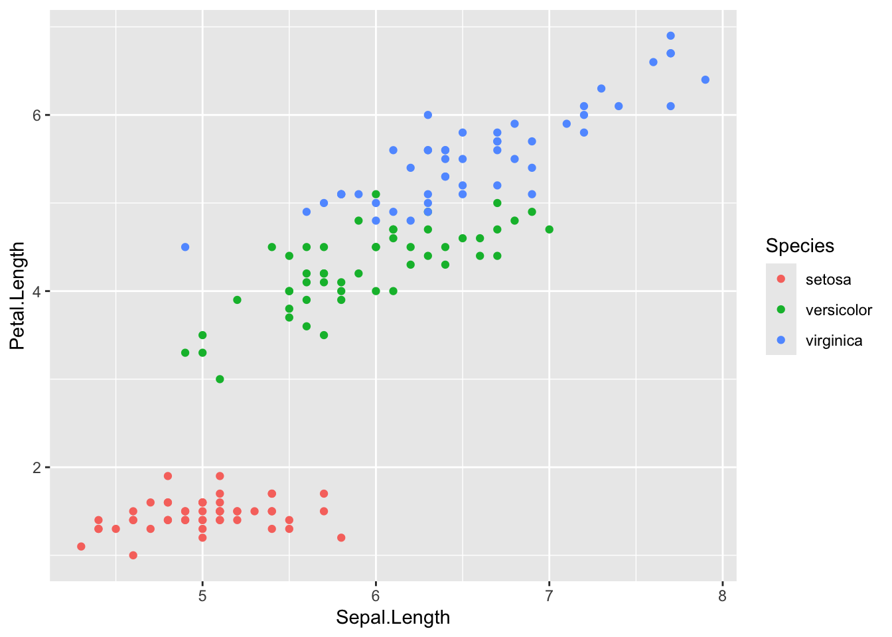
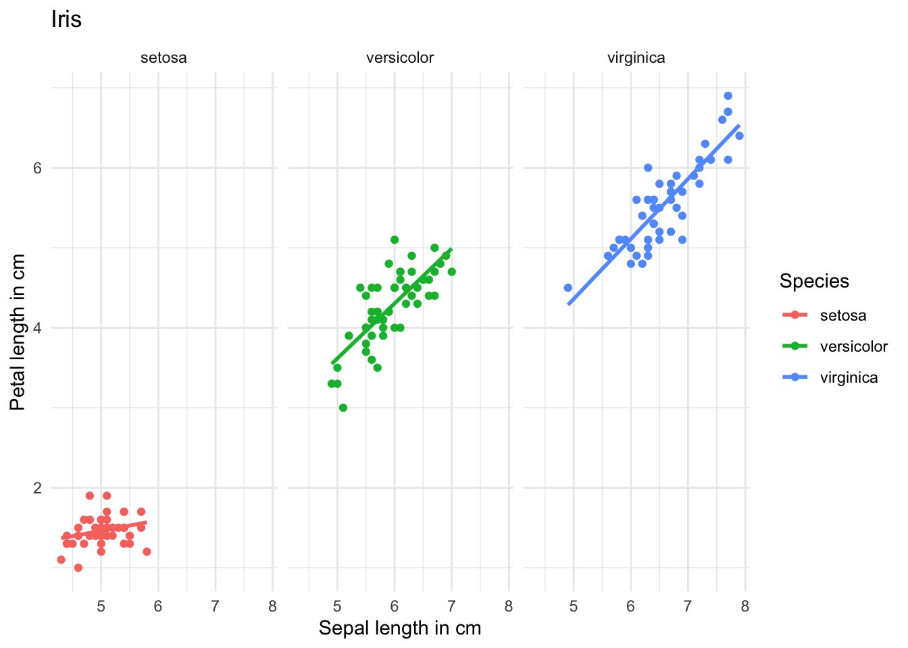
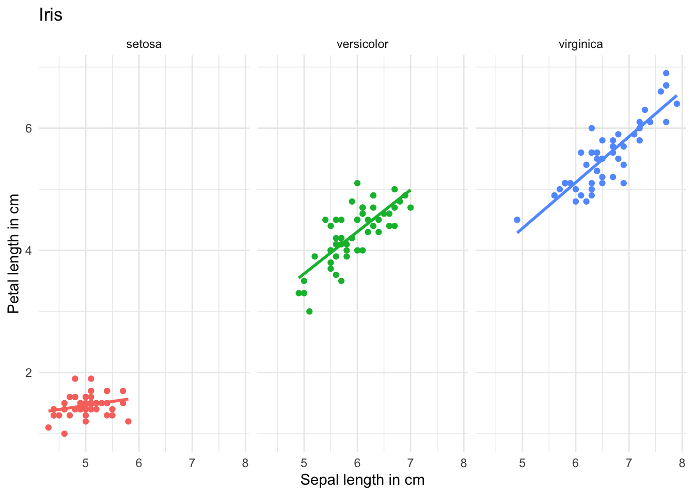
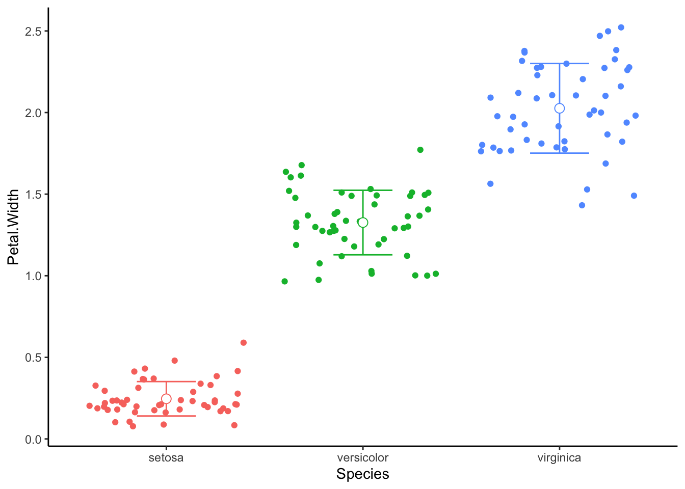

# Instead of
data <- read.csv("C:/Users/Andi/Documents/R/envrisk/data/coralcover.csv")
# You can use
data <- read.csv("data/coralcover.csv")Environmental Risk
Part 1
Aim
Become more confident with R
Analyse a real data set
Visualize data
Impact of bleaching on coral cover in Moorea
Use RStudio Projects
Helps to keep data, scripts, and plots on one place
Easy to find files, all file paths start in project directory
Like this, it is easy to share your analysis and move it around on your computer
Create Project
→


Folder Structure
data: All data used for you analysis. Keep in it a folder with all raw data that you do not touch
scripts: All scrips for your analysis. You can keep it organised with numbers, e.g.
1_data_exploration.qmd2_plots.qmd
plots: Plots generated during your analysis
Use Quarto Documents
Allows a mix of text and R code and is great to document what you are doing
Plots and tables are shown in the same document
Can be exported to HTML, PDF
For presentations, manuscripts, websites, etc.
Use Quarto Documents
→ →

Use Quarto Documents
Insert R code with  or on Mac Option-Command-IOption-Command-I or Windows Control-Alt-OControl-Alt-O
or on Mac Option-Command-IOption-Command-I or Windows Control-Alt-OControl-Alt-O

Use Quarto Documents
Task 1.1
Create a project
Create the folders scripts, data, and plots
Create an empty Quarto Document
Try out to write text and some simple R code like print(“Hello”)
Use tidyverse package
Collection of useful packages for data manipulation and visualization (e.g.
ggplot2,dplyr, etc.)Includes most functions needed for initial data analysis
library(tidyverse)Introduction to ggplot2 package
Workflow
- Add data to
ggplot - Define layer type (points, lines, etc), multiple layers can be stacked
- Define what should be plotted on x and y axis, colors, point and line types
- Additional formatting, as subplots, specific colors, labels, plot title, etc.
- Themes for text size, style, etc.
Introduction to ggplot2 package
library(tidyverse)Load the tidyverse package
Introduction to ggplot2 package
Introduction to ggplot2 package
Introduction to ggplot2 package
── Attaching core tidyverse packages ──────────────────────── tidyverse 2.0.0 ──
✔ dplyr 1.1.4 ✔ readr 2.1.5
✔ forcats 1.0.0 ✔ stringr 1.5.1
✔ ggplot2 3.5.1 ✔ tibble 3.2.1
✔ lubridate 1.9.4 ✔ tidyr 1.3.1
✔ purrr 1.0.2
── Conflicts ────────────────────────────────────────── tidyverse_conflicts() ──
✖ dplyr::filter() masks stats::filter()
✖ dplyr::lag() masks stats::lag()
ℹ Use the conflicted package (<http://conflicted.r-lib.org/>) to force all conflicts to become errors
- Add a point layer
- Define which columns should be plotted on x and y axis in
aes()
Introduction to ggplot2 package

Introduction to ggplot2 package
Introduction to ggplot2 package

Introduction to ggplot2 package
Introduction to ggplot2 package
- Add another layer
- Here, a visualization of a regression for the different
Species
Introduction to ggplot2 package
library(tidyverse)
data(iris)
ggplot(data = iris)+
geom_point(aes(x = Sepal.Length, y = Petal.Length,
colour = Species), size = 4)+
geom_smooth(aes(x = Sepal.Length, y = Petal.Length,
group = Species),
method = "lm", se = FALSE, colour = "black", linewidth = 2)`geom_smooth()` using formula = 'y ~ x'The order of the layers depends on the order in the code
Introduction to ggplot2 package
library(tidyverse)
data(iris)
ggplot(data = iris)+
geom_smooth(aes(x = Sepal.Length, y = Petal.Length,
group = Species),
method = "lm", se = FALSE, colour = "black", linewidth = 2)+
geom_point(aes(x = Sepal.Length, y = Petal.Length,
colour = Species), size = 4)`geom_smooth()` using formula = 'y ~ x'
The order of the layers depends on the order in the code
Introduction to ggplot2 package
Introduction to ggplot2 package
Edit axis labels and titles
Introduction to ggplot2 package
library(tidyverse)
data(iris)
ggplot(data = iris,
aes(x = Sepal.Length, y = Petal.Length,
colour = Species))+
geom_point()+
geom_smooth(method = "lm", se = FALSE)+
labs(x = "Sepal length in cm", y = "Petal length in cm",
title = "Iris")+
facet_grid(~Species)`geom_smooth()` using formula = 'y ~ x'
Divide into subplots depending on column
Introduction to ggplot2 package
library(tidyverse)
data(iris)
ggplot(data = iris,
aes(x = Sepal.Length, y = Petal.Length,
colour = Species))+
geom_point()+
geom_smooth(method = "lm", se = FALSE)+
labs(x = "Sepal length in cm", y = "Petal length in cm",
title = "Iris")+
facet_grid(~Species)+
theme_minimal()`geom_smooth()` using formula = 'y ~ x'Define style of plot
Introduction to ggplot2 package
library(tidyverse)
data(iris)
ggplot(data = iris,
aes(x = Sepal.Length, y = Petal.Length,
colour = Species))+
geom_point()+
geom_smooth(method = "lm", se = FALSE)+
labs(x = "Sepal length in cm", y = "Petal length in cm",
title = "Iris")+
facet_grid(~Species)+
theme_minimal()+
theme(legend.position = "None")`geom_smooth()` using formula = 'y ~ x'
Define style of plot
Introduction to ggplot2 package
library(tidyverse)
data(iris)
plot_iris <- ggplot(data = iris,
aes(x = Sepal.Length, y = Petal.Length,
colour = Species))+
geom_point()+
geom_smooth(method = "lm", se = FALSE)+
labs(x = "Sepal length in cm", y = "Petal length in cm",
title = "Iris")+
facet_grid(~Species)+
theme_minimal()+
theme(legend.position = "None")
# to show it
plot_irisPlots can be saved as a variable
Introduction to ggplot2 package
Save plots with ggsave()
ggsave(filename = "plot_iris.pdf", # chose filename and file format (.png, .svg, .jpg, etc.)
plot = plot_iris, # chose plot that should be saved
width = 17 ,height = 8, units = "cm", # chose size of saved plot
scale = 1, # change size of all elements in plot. Smaller number -> larger
path = "../plots") # location where plot should be savedIntroduction to ggplot2 package
palmerpenguins is another R example data set with data on three penguin species


Introduction to ggplot2 package
Task 1.2
Make a similar plot
dat_penguins <- read.csv("https://tinyurl.com/4cr2t6jt")
dat_penguins %>%
ggplot(aes(x = bill_length_mm,
y = bill_depth_mm,
col = species)) +
geom_point(aes(shape = species),
size = 3,
alpha = 0.8) +
geom_smooth(method = "lm", se = FALSE) +
scale_color_manual(values = c("darkorange","purple","cyan4")) +
labs(title = "Penguin bill dimensions",
x = "Bill length (mm)",
y = "Bill depth (mm)",
color = "Penguin species",
shape = "Penguin species") +
theme_minimal()`geom_smooth()` using formula = 'y ~ x'Warning: Removed 2 rows containing non-finite outside the scale range
(`stat_smooth()`).Warning: Removed 2 rows containing missing values or values outside the scale range
(`geom_point()`).
Introduction to pipes
Imagine baking a cake
- Mix ingredients
- Bake
- Decorate
- Slice
- Eat
“Original” R way
mix(ingredients)Introduction to pipes
Imagine baking a cake
- Mix ingredients
- Bake
- Decorate
- Slice
- Eat
“Original” R way
bake(mix(ingredients))Introduction to pipes
Imagine baking a cake
- Mix ingredients
- Bake
- Decorate
- Slice
- Eat
“Original” R way
decorate(bake(mix(ingredients)))Introduction to pipes
Imagine baking a cake
- Mix ingredients
- Bake
- Decorate
- Slice
- Eat
“Original” R way
slice(decorate(bake(mix(ingredients))))Introduction to pipes
Imagine baking a cake
- Mix ingredients
- Bake
- Decorate
- Slice
- Eat
“Original” R way
eat(slice(decorate(bake(mix(ingredients)))))Introduction to pipes
Imagine baking a cake
- Mix ingredients
- Bake
- Decorate
- Slice
- Eat
“Original” R way
eat(slice(decorate(bake(mix(ingredients)))))Pipes (%>%)
ingredients %>%
mix() %>%
bake() %>%
decorate() %>%
slice() %>%
eat()Introduction to pipes
Imagine baking a cake
- Mix ingredients
- Bake
- Decorate
- Slice
- Eat
“Original” R way
eat(slice(decorate(bake(mix(ingredients)))))Pipes (%>%)
ingredients %>%
mix() %>%
bake() %>%
decorate() %>%
slice() %>%
eat()Introduction to pipes
iris %>%
mutate(petal_length_mm = Petal.Length * 10) %>% # create a new column with petal lenght in mm
select(-Petal.Length) %>% # remove Petal.Length column
filter(Species == "virginica") %>% # filter for virginica
arrange(petal_length_mm) %>% # sort according to petal_length_mm
head(10) # show first 10 rows| Sepal.Length | Sepal.Width | Petal.Length | Petal.Width | Species | petal_length_mm |
|---|---|---|---|---|---|
| 4.9 | 2.5 | 4.5 | 1.7 | virginica | 45 |
| 6.2 | 2.8 | 4.8 | 1.8 | virginica | 48 |
| 6.0 | 3.0 | 4.8 | 1.8 | virginica | 48 |
| 5.6 | 2.8 | 4.9 | 2.0 | virginica | 49 |
| 6.3 | 2.7 | 4.9 | 1.8 | virginica | 49 |
| 6.1 | 3.0 | 4.9 | 1.8 | virginica | 49 |
| 5.7 | 2.5 | 5.0 | 2.0 | virginica | 50 |
| 6.0 | 2.2 | 5.0 | 1.5 | virginica | 50 |
| 6.3 | 2.5 | 5.0 | 1.9 | virginica | 50 |
| 5.8 | 2.7 | 5.1 | 1.9 | virginica | 51 |
Introduction to dplyr package
Works well with pipes to manipulate and summarize data
iris %>%
group_by(Species) %>%
summarise(mean_petal_length = mean(Petal.Width),
mean_petal_width = mean(Petal.Width))# A tibble: 3 × 3
Species mean_petal_length mean_petal_width
<fct> <dbl> <dbl>
1 setosa 0.246 0.246
2 versicolor 1.33 1.33
3 virginica 2.03 2.03 You can insert a pipe %>% with
Mac Command-Shift-MCommand-Shift-M Windows Ctrl-Shift-MCtrl-Shift-M
Introduction to dplyr package
Task 1.3
Calculate the
mean mean()
standard deviation sd()
number of replicates (n())
of body_mass_g for the different species and sexes in dat_penguins.
`summarise()` has grouped output by 'species'. You can override using the
`.groups` argument.| species | sex | mean_body_mass_g | sd_body_mass_g | n |
|---|---|---|---|---|
| Adelie | female | 3368.836 | 269.3801 | 73 |
| Adelie | male | 4043.493 | 346.8116 | 73 |
| Adelie | NA | NA | NA | 6 |
| Chinstrap | female | 3527.206 | 285.3339 | 34 |
| Chinstrap | male | 3938.971 | 362.1376 | 34 |
| Gentoo | female | 4679.741 | 281.5783 | 58 |
| Gentoo | male | 5484.836 | 313.1586 | 61 |
| Gentoo | NA | NA | NA | 5 |
Introduction to dplyr package
Useful for plotting
# create summary data frame with mean and sd
irisS <- iris %>%
group_by(Species) %>%
summarise(mean_petal_width = mean(Petal.Width),
sd_petal_width = sd(Petal.Width))
# take a look at the create data frame
irisS# A tibble: 3 × 3
Species mean_petal_width sd_petal_width
<fct> <dbl> <dbl>
1 setosa 0.246 0.105
2 versicolor 1.33 0.198
3 virginica 2.03 0.275Introduction to dplyr package
Useful for plotting
ggplot(data = irisS, aes(x = Species, colour = Species)) + # Set up ggplot and columns used in all layers
geom_point(data = iris, aes(y = Petal.Width), # Take raw date for point layer
position = position_jitter()) + # Shuffle points along x axis
geom_errorbar(aes(ymin = mean_petal_width - sd_petal_width, # Take summary data for errorbars
ymax = mean_petal_width + sd_petal_width),
width = 0.3) +
geom_point(data = irisS, aes(y = mean_petal_width), # Plot the mean on top
shape = 21, size = 3, fill = "white") + # with a larger point
theme_classic()+
theme(legend.position = "None")
Data format
Wide format
Easy to read
| year | best_film | best_soundtrack |
|---|---|---|
| 2015 | Birdman | The Grand Budapest Hotel |
| 2016 | Spotlight | The Hateful Eight |
| 2017 | Moonlight | La La Land |
| 2018 | The Shape of Water | The Shape of Water |
| 2019 | Green Book | Black Panther |
| 2020 | Parasite | Joker |
| 2021 | Nomadland | Soul |
| 2022 | CODA | Dune |
| 2023 | Everything Everywhere All at Once | All Quiet on the Western Front |
| 2024 | Oppenheimer | Oppenheimer |
| 2025 | Anora | The Brutalist |
Long format
Easy to use in R
| year | category | winner |
|---|---|---|
| 2015 | best_film | Birdman |
| 2015 | best_soundtrack | The Grand Budapest Hotel |
| 2016 | best_film | Spotlight |
| 2016 | best_soundtrack | The Hateful Eight |
| ... | ... | ... |
| ... | ... | ... |
| ... | ... | ... |
| 2024 | best_film | Oppenheimer |
| 2024 | best_soundtrack | Oppenheimer |
| 2025 | best_film | Anora |
| 2025 | best_soundtrack | The Brutalist |
Wide to long
Before
| year | best_film | best_soundtrack |
|---|---|---|
| 2015 | Birdman | The Grand Budapest Hotel |
| 2016 | Spotlight | The Hateful Eight |
| 2017 | Moonlight | La La Land |
| 2018 | The Shape of Water | The Shape of Water |
| 2019 | Green Book | Black Panther |
| 2020 | Parasite | Joker |
| 2021 | Nomadland | Soul |
| 2022 | CODA | Dune |
| 2023 | Everything Everywhere All at Once | All Quiet on the Western Front |
| 2024 | Oppenheimer | Oppenheimer |
| 2025 | Anora | The Brutalist |
After
| year | category | winner |
|---|---|---|
| 2015 | best_film | Birdman |
| 2015 | best_soundtrack | The Grand Budapest Hotel |
| 2016 | best_film | Spotlight |
| 2016 | best_soundtrack | The Hateful Eight |
| ... | ... | ... |
| ... | ... | ... |
| ... | ... | ... |
| 2024 | best_film | Oppenheimer |
| 2024 | best_soundtrack | Oppenheimer |
| 2025 | best_film | Anora |
| 2025 | best_soundtrack | The Brutalist |
df_oscars_W %>% # take data in wide format
pivot_longer(cols = c("best_film", "best_soundtrack"), # select columns that will be used as variable names
# columns not selected (here `year`)
# will be used for values
names_to = "category", # define name of variable name column
values_to = "winner") # define name of value column Long to wide
Before
| year | category | winner |
|---|---|---|
| 2015 | best_film | Birdman |
| 2015 | best_soundtrack | The Grand Budapest Hotel |
| 2016 | best_film | Spotlight |
| 2016 | best_soundtrack | The Hateful Eight |
| ... | ... | ... |
| ... | ... | ... |
| ... | ... | ... |
| 2024 | best_film | Oppenheimer |
| 2024 | best_soundtrack | Oppenheimer |
| 2025 | best_film | Anora |
| 2025 | best_soundtrack | The Brutalist |
After
| year | best_film | best_soundtrack |
|---|---|---|
| 2015 | Birdman | The Grand Budapest Hotel |
| 2016 | Spotlight | The Hateful Eight |
| 2017 | Moonlight | La La Land |
| 2018 | The Shape of Water | The Shape of Water |
| 2019 | Green Book | Black Panther |
| 2020 | Parasite | Joker |
| 2021 | Nomadland | Soul |
| 2022 | CODA | Dune |
| 2023 | Everything Everywhere All at Once | All Quiet on the Western Front |
| 2024 | Oppenheimer | Oppenheimer |
| 2025 | Anora | The Brutalist |
df_oscars_L %>% # take data in long format
pivot_wider(names_from = "category", # select column used to store variable names
values_from = "winner") # select column used to store valuesUse “Tidy Data”

Use “Tidy Data”
When preparing data in Excel, don’t merge cells, use empty cells for formatting, or use color as information
Column names should not contain spaces:
data$column_name # easy
data$column name # causes error
data$`column name` # annoyingGeneral tips
- Start file names with date (format yyyy_mm_dd) for chronological sorting
- Avoid spaces in file names
Read more
Reproducible research: Guide by British Ecological Society with tips to keep data organized
R for Data Science: Free eBook with basics of R